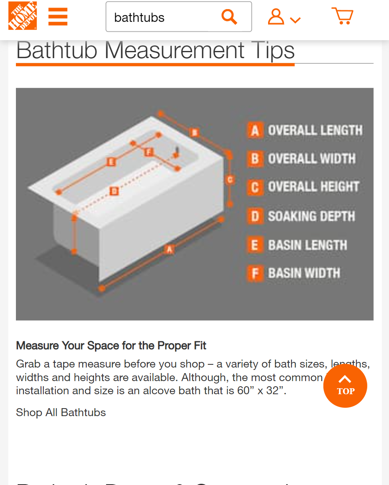
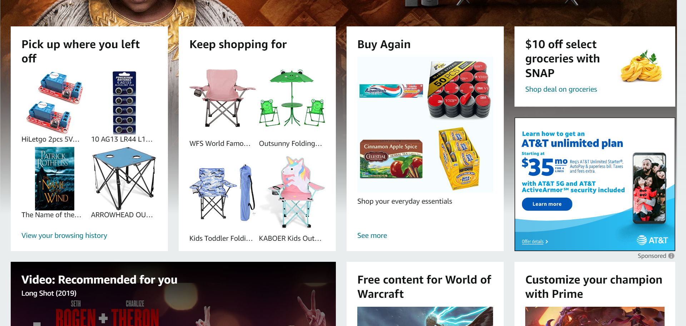
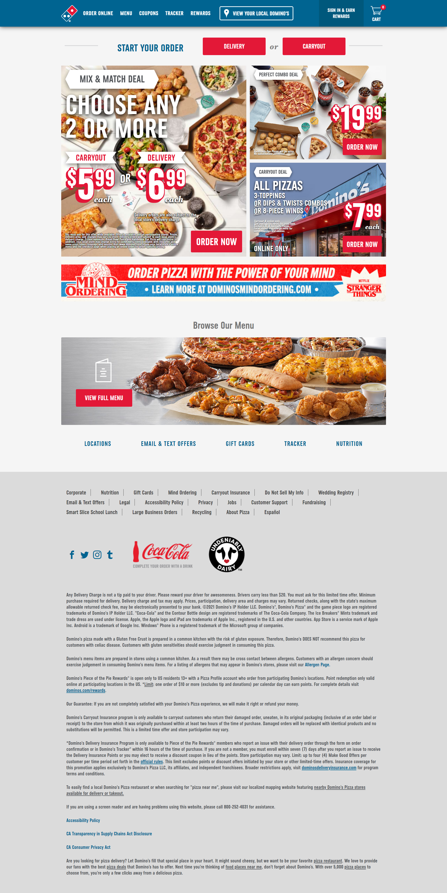
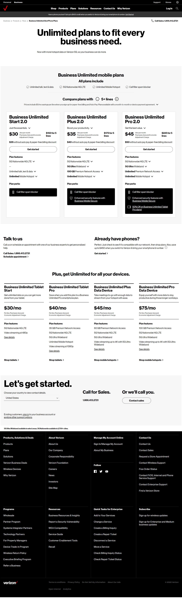

Visual Hierarchy

Lowes
Lowes shows visual hierarchy very well in my opinion.
They show things important to their company buisness
up front, and they promote different adds and promotions
in order to get people to migrate to their website or if
they are already there then these items help people to
stay on the lowes website.
Hick's Law

HomeDepot
Home Depot shows Hick's Law fantasticly.
They limit the options up front to search through.
They discribe the different options to choose from
this gives the users limited options up front and
helps limit options later.
Rule of Thirds
The Church Of Jesus Christ of Latter Day Saints
The Church also shows the rule of thirds amazingly.
The Church uses images to convey its messages with subtitles
that show what each image directs the user too. The user is able to
discern, and choose where to go baised on these oprions.
White Space and Clean Design

Facebook
I feel that Facebook shows a great use of white space
and negitive space. I would say they have a very clean design.
The design of Facebook is to let people socialize and share parts
parts of their lives. With all of this Facebook would probably not
not be able to work without external support and advertisement.
These advertisements and promotions are given enough space so they
do not distract from the actual functionality of the website.
PARC: Proximity

"Amazon.com "
Forgive me for using the same site for two principles.
However, Amazon uses proximity to the fullest of its
usefullness. Relationships are infered, and everything is
organized based on alignment and proximity.
PARC: Alignment
"Amazon.com "
Amazon shows a great example of Alignment.
Every element shows a relationship to items
in its respective element. All space is used
to its utmost effectiveness.
PARC: Repetition

" dominoes.com"
Dominos is a great example of repitition. Look at how many
times in each element it says "order now". Its obviouse what the purpose
of the website is just from these elements alone.
PARC: Contrast

"verizon.com"
Verizon uses contrast very well. As it sticks to about three colors. Red, black, and white.
Black and white are on the opositte side of the contrast spectrum.
Red is visible with a black background, and is also far from the white side of
the spectrum.